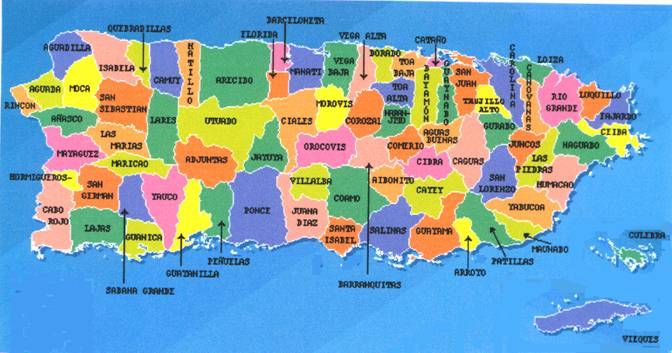

Eli Nunez (Y00283234)
A continuacion una lista de municipios navegables:
Aguadilla
Cabo Rojo
Culebra
Fajardo
Ponce
San Juan
Culebra
- Cuna del Sol Borincano
Vieques
- La Isla Nena
Mapa Interactivo de Puerto Rico:
